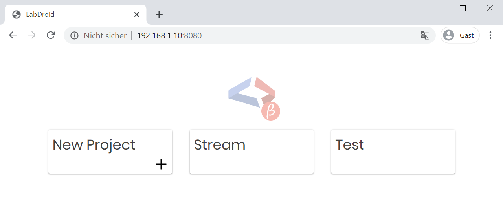
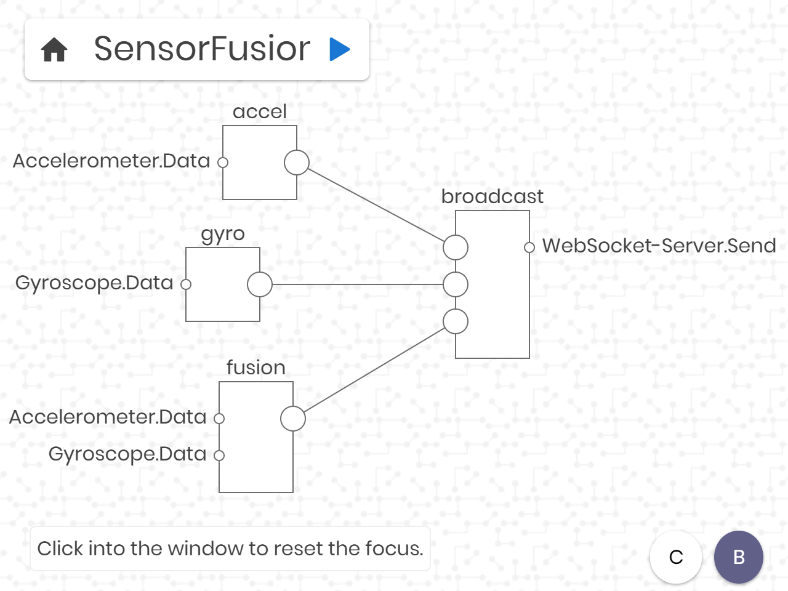

Getting Started
LabDroid is shipped with an inbuild IDE based on web technologies. This allows you to prepare your projects from your PC, MAC or any other platform which supports Google Chrome. You can also try to use Firefox or any other browser but at the moment the only official supported browser is Chrome/Chromeium.
After you launch LabDroid a notification appears which shows your the URL (http://PHONE_IP:8080) to open the IDE. Just open this page on another device which is connected to the same network. After a short loading time you should see the IDE.
IDE
Project Overview
The first screen allows you to choose your project or create a new one:
Workspace
If you open a project you will see the workspace where you can place nodes to implement your idea.

To place a node just double click with the left mouse into the workspace. A dialog will appear and show your the avaible nodes.
After you placed the node you can move it around by long pressing into the node center. To connect two nodes you just have to
long press on an output port and drag the line into a input port.
For all interaction options, you will see a help window in the lower left corner. If you move the mouse over a node or port,
this window shows you all the options.
Next steps
Now you are able to start using LabDroid. Further information about the nodes can be founded on this page. Just select the section of your interest on the left side.
Script Node
LabDroid provides a script node which is powered by V8 from Google. Before we start with the technical things I would like to give
some credits to Ian Bull the founder of J2V8: Great job! :)
With the help of J2V8 you get a full-size JavaScript interpreter which is even optimized for Android. Beside of the API extensions
LabDroid offers you can get use of all inbuild namespaces like Date, JSON, Math, RegExp and much more.
For LabDroid I implemented some additional functions which will be explained in the following section.
API
Basics
Receives an object from a stream via the input port.
| Parameters | |
|---|---|
| port | The number to address the wanted input port. Starting from 0 for the first one. |
| Returns | |
| any | The received object. |
Polls an object via the input port. In comparision to the $receive() function this one will be used for static information. You need to connect a corresponding output port in order to use this function.
| Parameters | |
|---|---|
| port | The number to address the wanted input port. Starting from 0 for the first one. |
| Returns | |
| any | The object which was received through the corresponding input port. |
Send an object via the output port to the connected component or node.
| Parameters | |
|---|---|
| port | The number to address the wanted output port. Starting from 0 for the first one. |
| object | The data you would like to send. It's possible to place any kind of data (e.g. string, number, array or a object). |
Enables you to pause the script for some time.
| Parameters | |
|---|---|
| time | A number to force the script node to sleep/wait for the desired time (milliseconds). |
Returns the current system time of your phone, in nanoseconds.
| Returns | |
|---|---|
| number | The current system time (nanoseconds). |
Write a message to the log. Can be used for debugging.
| Parameters | |
|---|---|
| message | The message you would like to log. |
File / Storage
The File API can be used to log informations or store variables. The files are shared inside a project.
Write the content to the end of the file.
| Parameters | |
|---|---|
| fileName | The name of the file. |
| content | The content to write into the file. |
Can be used to check if this file exists.
| Parameters | |
|---|---|
| fileName | The name of the file. |
| Returns | |
| bool | True if the file exists. Otherwise false. |
Deletes the file.
| Parameters | |
|---|---|
| fileName | The name of the file. |
Returns the content of the file as a string. If it contains a value you would like to use just parse it with JSON.parse().
| Parameters | |
|---|---|
| fileName | The name of the file. |
| Returns | |
| string | The content of the file. |
Writes the content into the file. This function will override any existing content. If the file doesn't exists it will be automatically generated.
| Parameters | |
|---|---|
| fileName | The name of the file. |
| content | The content to write into the file. |
NFC
NFC is a technologies which allows you to identify an object. Many plastic cards e.g. library card, public transport card, ..) are equiped with an RFID tag, which can be read out through this node.
Inputs
let on = {}
$out(port, on)
let off = 0
$out(port, off)
Outputs
let data = $in(port)
data // string (RFID tag)
Accelerometer
The accelerometer reports the acceleration of the device along the
three sensor axes. The measured acceleration includes both the
physical acceleration (change of velocity) and the gravity.
All values are in SI units [m/s^2] and measure the acceleration of
the device minus the force of gravity along the 3 sensor axes.
Inputs
let on = {}
$out(port, on)
let off = 0
$out(port, off)
Outputs
let data = $in(port)
data.x // float [m/s^2]
data.y // float [m/s^2]
data.z // float [m/s^2]
GPS
GPS is one kind of a Global Navigation Satellite System (GNSS). The
GPS node can be used to get the current position or speed of the
device. Once the module collects enough satellite data to calculate
an accurate position, it has a valid location (a fix ) that it can
report.
Note: The first fix can take some time (up to a few minutes if the
device is indoor).
Inputs
let on = {}
$out(port, on)
let off = 0
$out(port, off)
Outputs
let data = $in(port)
data.accuracy // float []
data.altitude // float [m]
data.bearing // float [deg]
data.latitude // float []
data.longitude // float []
data.speed // float [m/s]
Gyroscope
The Gyroscope reports the rate of rotation of the device around the
three sensor axes. Rotation is positive in the counterclockwise
direction (right-hand rule).
All values are in radians per second (rad/s).
Inputs
let on = {
'type': 'raw' | 'calibrated'
}
$out(port, on)
let off = 0
$out(port, off)
Outputs
let data = $in(port)
data.x // float [rad/s]
data.y // float [rad/s]
data.z // float [rad/s]
Magnetometer
The magnetometer is used to measure the ambient magnetic field. The
measurement is reported in the x, y and z fields.
All values are in micro-Tesla (uT).
Inputs
let on = {}
$out(port, on)
let off = 0
$out(port, off)
Outputs
let data = $in(port)
data.x // float [uT]
data.y // float [uT]
data.z // float [uT]
Vibrator
The Vibrator is used to generate a haptic feedback. One of the most common usage is to notifiy the user about new messages.
Inputs
let on = {
'power': 0.01 .. 1.0, // float [%]
'time': 1 .. 1000 // int [ms]
}
$out(port, on)
let off = 0
$out(port, off)
Bluetooth (Client)
Inputs
let on = {
'mac': 'AA:BB:CC:DD:EE:FF', // string [a valid Bluetooth-MAC]
'bufferSize': 8 .. 512, // int [how many bytes one frame can contain]
'terminator': '' | '\n' | '\r\n' // string [frame end character]
}
$out(port, on)
let off = 0
$out(port, off)
let message = 'Hello World!'
$out(port, message)
Outputs
let message = $in(port)
$log(message)
WebSocket (Server)
A WebSocket can be used to stream data between LabDroid and any other network connected device which supports this technology.
Inputs
let on = {}
$out(port, on)
let off = 0
$out(port, off)
let message = 'Hello World!'
$out(port, message)
Outputs
let message = $in(port)
$log(message)